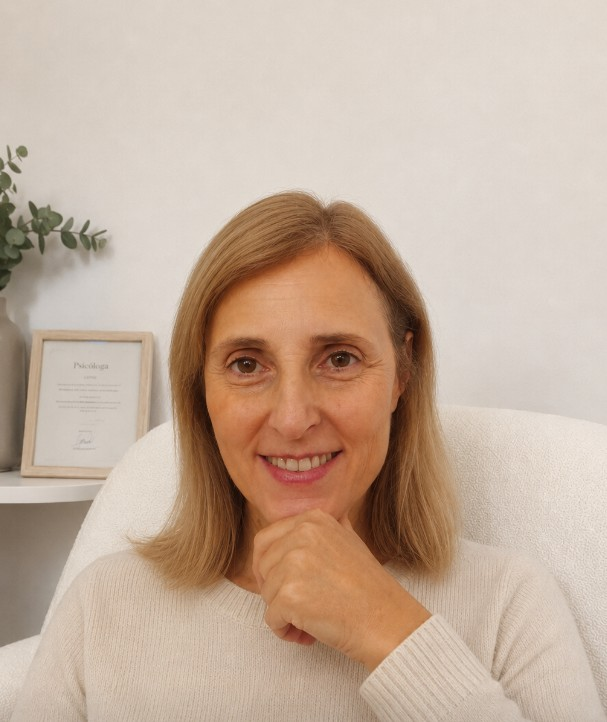

Ansiedad
Comprender la ansiedad y desarrollar herramientas para gestionar mejor las situaciones del día a día.
PSICOLOGÍA ONLINE · BIENESTAR EMOCIONAL
Psicología online cercana, profesional y personalizada para ayudarte a comprender lo que estás viviendo y avanzar hacia tu bienestar emocional.

SOBRE RAQUEL
Soy Raquel Martínez García, psicóloga con más de 14 años de experiencia profesional en el ámbito de la psicología.
Durante estos años he tenido la oportunidad de acompañar a más de 5.000 pacientes en diferentes procesos personales y emocionales, siempre desde una perspectiva profesional, cercana y humana.
He sido elegida 7 veces consecutivas como mejor psicóloga de Cartagena, un reconocimiento que valoro especialmente por la confianza de las personas a las que he acompañado.
Cada persona es diferente y cada proceso necesita su propio espacio. Por eso, mi objetivo es ofrecer una atención psicológica personalizada, adaptada a las necesidades y circunstancias de cada persona.
Actualmente, mi consulta está enfocada principalmente en la atención psicológica online, permitiendo realizar las sesiones desde cualquier lugar, con comodidad, privacidad y flexibilidad.
Dar el primer paso puede ser el comienzo de un cambio importante.
ESPECIALIDADES
Algunos de los ámbitos que podemos trabajar conjuntamente durante el proceso psicológico.
Comprender la ansiedad y desarrollar herramientas para gestionar mejor las situaciones del día a día.
Acompañamiento en momentos de tristeza, desánimo y dificultades emocionales.
Trabajar la relación contigo mismo y construir una percepción más saludable de ti.
Un espacio de acompañamiento para abordar experiencias difíciles y sus consecuencias.
Aprender a identificar y gestionar las fuentes de estrés que afectan al bienestar.
Trabajar dificultades en las relaciones personales, familiares o de pareja.
MI FORMA DE TRABAJAR
Cada proceso psicológico es diferente. Por eso, el acompañamiento se adapta a cada persona y a sus objetivos.
Conocer tu situación, tus necesidades y aquello que te ha llevado a buscar ayuda.
Explorar juntos lo que está ocurriendo y encontrar nuevas formas de entenderlo.
Utilizar herramientas adaptadas a tus necesidades y objetivos personales.
Favorecer cambios que contribuyan a mejorar tu bienestar y tu día a día.
Las sesiones se realizan online, de forma cómoda y privada, sin necesidad de desplazarte. Puedes realizar tu proceso psicológico desde cualquier lugar.
TARIFAS
Elige la opción que mejor se adapte a tu proceso personal.
DAR EL PRIMER PASO
Si quieres comenzar un proceso psicológico, puedes ponerte en contacto conmigo.
CONTACTO
Si estás pensando en comenzar un proceso psicológico o simplemente quieres resolver alguna duda, puedes ponerte en contacto conmigo.
Un espacio profesional y cercano para trabajar en tu bienestar emocional desde la comodidad de tu hogar.
Solicitar información →